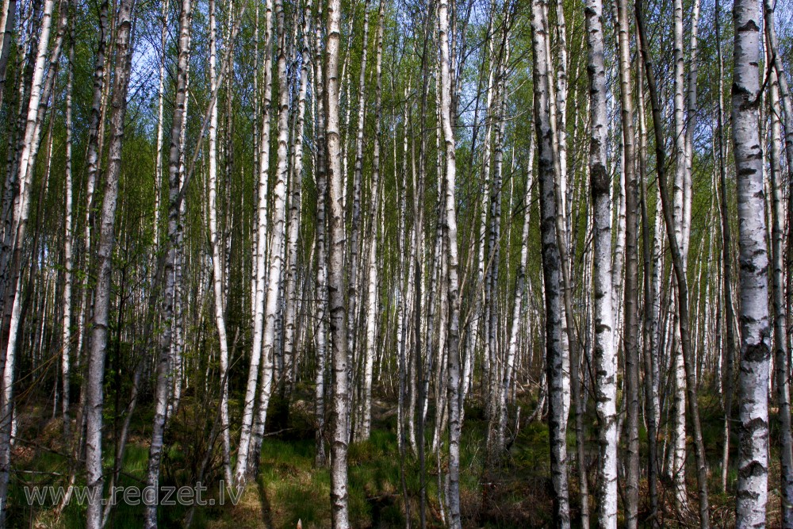

Birzs ir neliela bērzu grupa ar minimālu vai bez pameža. Tas ir neliels bērzu mežs, dabiski sastopamas birzis parasti ir mazas, varbūt ne vairāk kā dažus akrus lielas. Piemēram, sekvojas birzs vai vietējās bērzu grupas.

Avots: www.redzet.lv